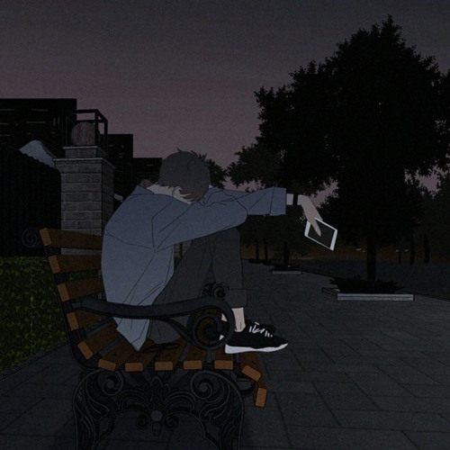

Liên Hệ Quảng cáo 0909999999
Mục Lục Truyện Tranh
07 Ghost (Nguyên tác: Amemiya Yuki – 2 tập 38 chapter)

1001 Nights (Nguyên tác: Han Seung Hee Jun Jin – 1 tập 20 chapter)
1/2 Prince (Nguyên tác: Yu Wo – 50 tập)
1/3 No Kareshi (Nguyên tác: Shimaki Ako)
1/4 Tình Yêu(Phỏng dịch: Minh Nhật – Trọn bộ 10 tập)
21 st Century Boys – Những Cậu Bé Thế Kỷ 21 (Nguyên tác: Urasawa Naoki – 16 chapter)
3 Hearts – Ba Trái Tim (Nguyên tác: Ichinose Kaoru – Đủ bộ 1 tập)
5 Giây đếm ngược (Nguyên tác: Yukan Kawachi – Trọn bộ 3 tập)
6 Chàng Trai và 1 Cô Gái (Biên dịch: Minh Nhật – 10 tập)
6000 (Nguyên tác: Koike Nokuto – 8 chapter)
666 Satan (Nguyên tác: Kisimoto Seishi – 8 tập – chưa đủ bộ)
7 Viên Ngọc Rồng (55 tập)